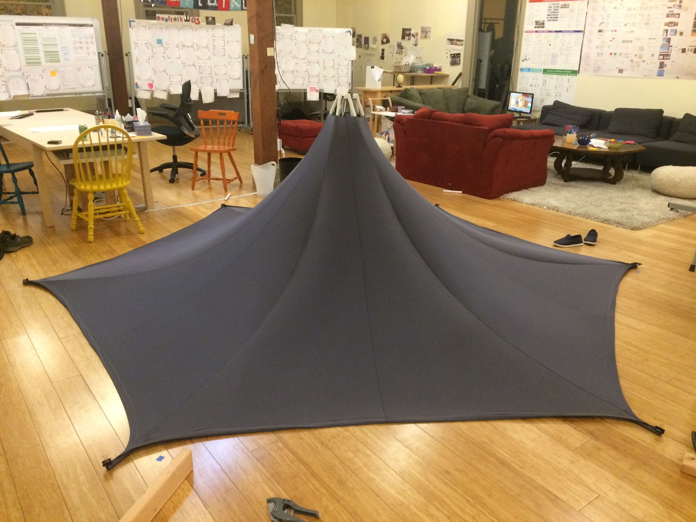
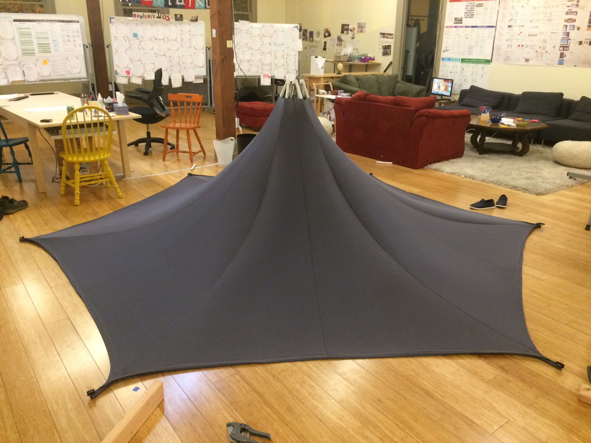

We built this pagoda for the 2018 Priceless Dirt Stage. The theme was "psychedlic zen garden". At night the pagoda served as a sitting space next to the dance floor. During the day it provided shade and hosted events like the sunset poetry reading.
The centerpiece is a large lantern in the shape of a polar zonohedron. The geometry is inspired by the zonohedral structures of Rob Bell. We wrote custom software to generate the geometry of the diamond faces and laser cut a prototype from chipboard. The final piece was constructed from MDF faces with windows for light to shine out of.

We mitered the edges of each face using a disk sander with an adjustable table, based on the advice of George Hart. Although not as badass as the custom jigs we created for doing mitered laser cuts on our crystals, this method is much more efficient! The mitered faces are held together with zip ties. The final piece consists of 121 laser cut pieces held together by 240 zip ties.


We used a six-fold symmetric tesselation as a motif for the trim of the pagoda and the six hanging lanterns. The pattern is inspired by Kumiko, the Japanese art of creating patterns from thin wooden strips. We explored patterns by doodling on a printed triangular grid, then recreated the pattern on the computer for laser cutting.
As we were limited by our laser cutter's bed size, we fabricated the trim as separate flat packable pieces which we then "IKEA assembled" on site.

The lanterns and zonohedron centerpiece have LED strip inside and use a rice paper backing to diffuse the light through their openings. Our favorite rice paper for lanterns is mulberry which has a beautiful, subtle texture and lets a lot of light through while softening it.
A note on glues: there are many glues you could use for sticking paper to wood — including a glue stick — but our favorite is yamato paste. It's made from rice starch and is completely non-toxic. We found this glue via thistothat, our favorite website about glue.
 

The structure itself reuses the wooden skeleton from the Observatory we made for Priceless 2017. We repainted it and made the pagoda top out of gray fabric stretched over a PVC pipe tipi. We curved the PVC by pouring boiling water into it while tensioning it with string, based on this youtube video by Bill Lawson.
The PVC is held together at the top with a laser cut mount and zip ties. It's topped with a zonohedron, echoing the centerpiece.
Thank you to Stephanie Geerlings and everyone on the 2018 Priceless Dirt Stage build team, and to everyone who helped assemble the structure on site, especially Katie Barrilleaux for assembling the lattice trim. Thank you to Ryan Alexander and Jason Peace for the photographs.